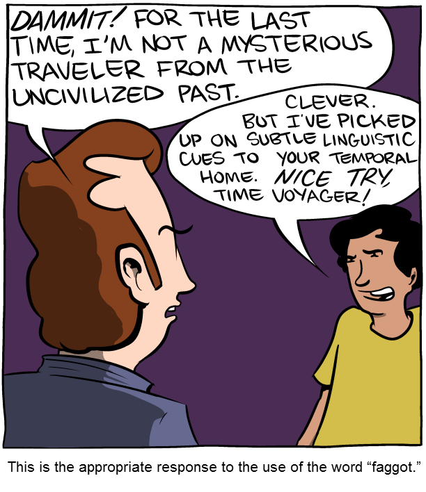
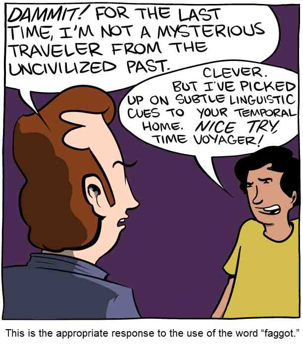

FLIF is a lossless format. Still, if you want to, you can allow the encoder to modify the input image in order to improve compression.
Obviously it will only do that if you tell it to, by using the command-line option --lossy [quality].
One of the advantages of using a lossless format in a lossy way (as opposed to using a lossy format), is that generation loss is not an issue. Of course the information that is lost, stays lost, but no matter how many times you save a FLIF file, it will not get any additional loss from a decode-encode cycle. This is not the case for e.g. JPEG, where each decode-encode cycle always introduces additional loss.
Lossy FLIF has the same advantages as lossless FLIF: it works well on any kind of image (photographs, webcomics, abstract art, whatever), and it is still Responsive by design: you can still progressively decode a lossy FLIF or generate a thumbnail from the first part of the file.
| Original (lossless) 104,585 byte PNG 57,648 byte FLIF |
Lossy FLIF 37,096 bytes |
JPEG (quality 25) 37,923 bytes |
|---|---|---|
|  |  |
Here is a case study on one image to give you an idea of the kind of artifacts lossy FLIF causes. In our opinion, at low qualities and for photographs, dedicated lossy formats like WebP, JPEG or BPG still produce better results. However, at very high-quality, we think lossy FLIF is a better option. Lossy WebP has obligatory chroma subsampling and YCbCr color transformation, which limits its usefulness at high qualities. JPEG also suffers from the YCbCr transformation, which effectively reduces 24-bit color to 22-bit (with most of the loss in reds and blues). FLIF, being a lossless format, does not have these limitations.
At high qualities, FLIF is better than JPEG and WebP in terms of PSNR for a given file size. Here are some plots to demonstrate this. The highest PSNR value shown here is actually lossless (which would be PSNR=infinity), but we changed that value to fit it on the plot. Only FLIF and near-lossless WebP can go completely lossless. The full quality range (0 to 100) is shown for each format.
{kind=link}
{kind=link}
{kind=link}
{kind=link}
{kind=link}
{kind=link}